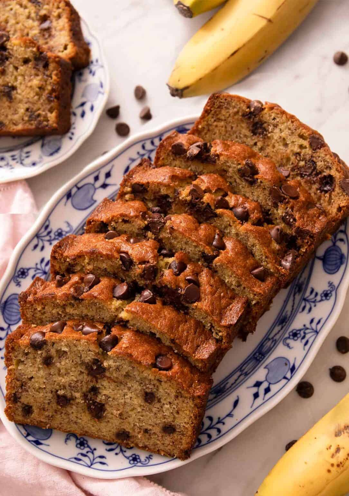

Odin's Chocolate Chip Banana Bread

Description
Enjoy this chocolate chip banana bread for breakfast, as a snack, or for dessert. It's quick, easy, and
the perfect way to use up extra bananas!
Ingredients
- 2 cups All Purpose Flour
- 1 tsp Baking Powder
- 1 tsp Baking Soda
- 1 tsp Salt
- 3 Ripe Bananas (mashed)
- 1 Tbsp Milk
- 3 tsp Ground Cinnamon
- 1 cup White Sugar
- 1/2 cup Butter (softened)
- 2 large Eggs
- 1 cup Chocolate Chips
Instructions
- Preheat the oven to 325 degrees F. Grease a 9x5-inch loaf pan, preferably glass.
- Mix flour, baking powder, baking soda, and salt in a bowl. Stir bananas, milk, and cinnamon
in another bowl. Beat sugar and butter together in a third bowl with an electric mixer until
light and fluffy; add eggs one at a time, beating well after each addition. Stir banana
mixture into butter mixture; mix in flour mixture until just blended. Fold in chocolate chips;
pour batter into the prepared loaf pan.
- Bake in the preheated oven until a toothpick inserted into the center comes out clean, about
70 minutes. Cool in the pan for 10 minutes before removing to cool completely on a wire rack
before slicing.